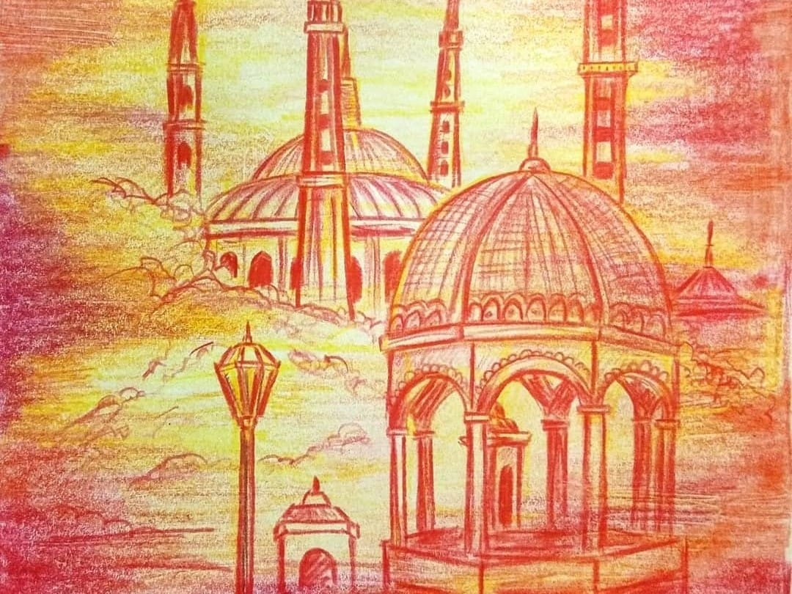
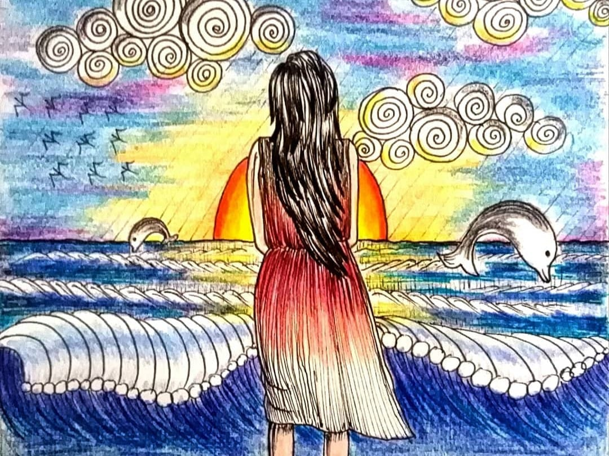
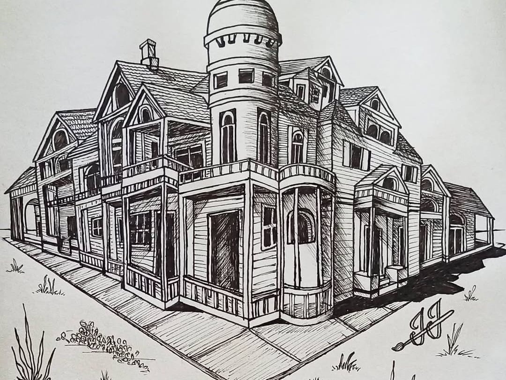
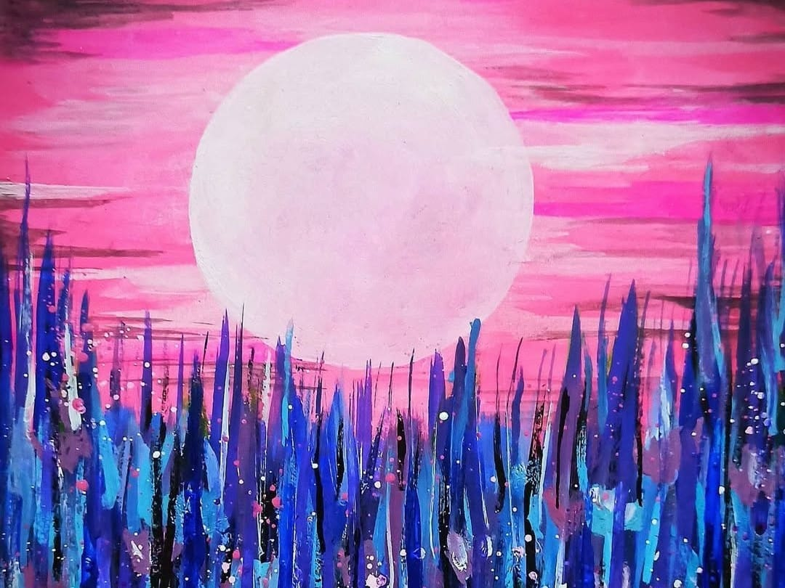
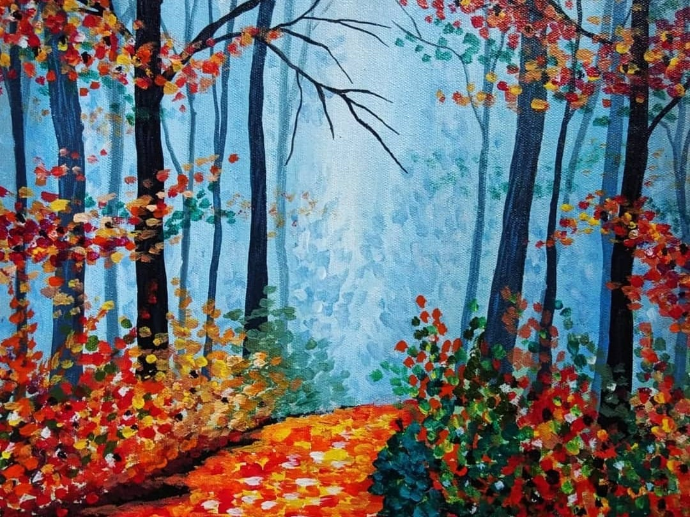
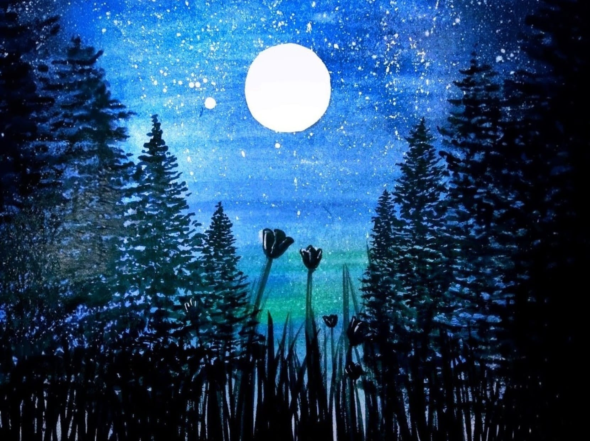
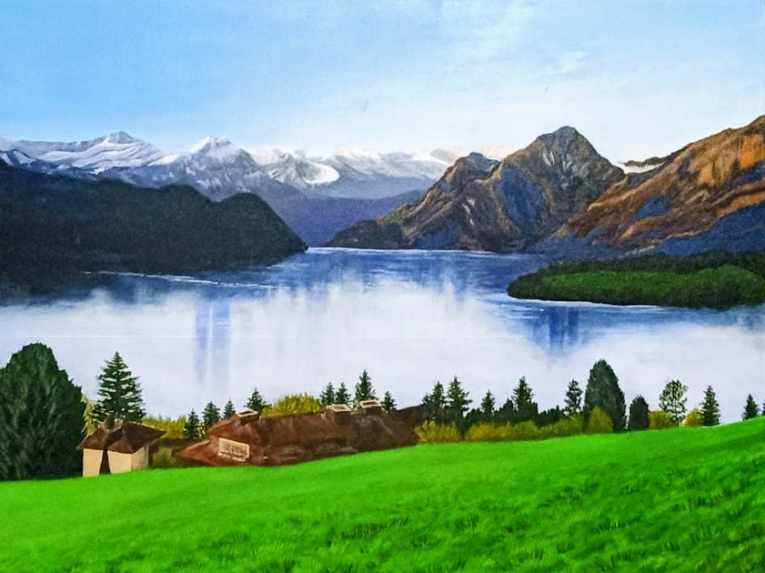
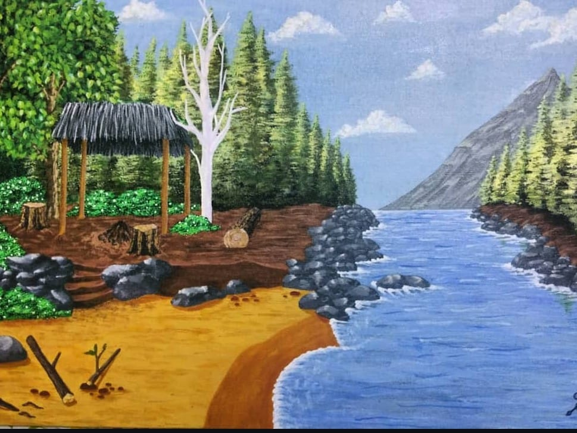
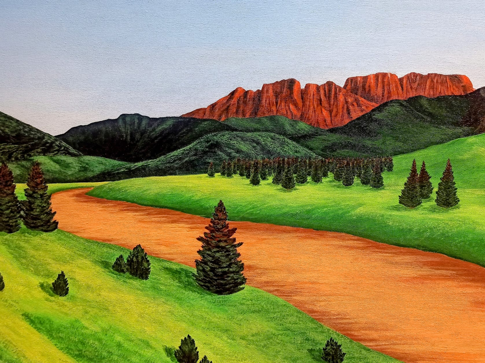

My Art Journey
From a very young age I was into art and paintings. I always loved exploring new painting mediums, materials and techniques. I used to pick up random things that people were about to throw away and turn them into something creative. For me, even scraps had the potential to become an art. All my hand-written assignments, back in school were colourful since I would decorate it using sketch pens and colour pensils. I started my art journey from colour pencils just like any other kids. Its easy, less complex and simple to handle. Anyone at starting stage can prefer solid colours like pencil colours, crayons, sketch pens, or even regular pen or pencil.
  Painting was something hard for me but I always wanted to do realistic paintings, since I got inspired from painting videos on YouTube. Initially when I started painting, my expectations were high but my knowledge level was so bad that I used basic A4-size sheets for water colours. Little did I know watercolor would spoil the paper. I was disappointed and thought of completely dropping painting and stick with pencil colours. But again circled back to painting since I really wanted to create realistic paintings of landscapes. Later I came to know I was supposed to use canvas to paint on. I started doing abstract paintings to get used to liquid paint and learn how to use brush, also how each type of stroke would change the effect.
  Later, I started imitating the works of artists, by watching their videos online. Those videos were informative that I learned a lot regarding different types of brushes, which brush is more apt for particular texture and so on. Slowly I was able to create art of my own. Seeing nature at its beauty, I was able to tell how that landscape view can be painted on canvas. I used to spend atleast one hour every day doing small paintings, improving my skill on the way. I'm still in my learning journey. If you want to be part of my learning journey, feel free to get along at Jiya's Art Blog . You can visit my artworks at Arctist.
  
Share Your Comments